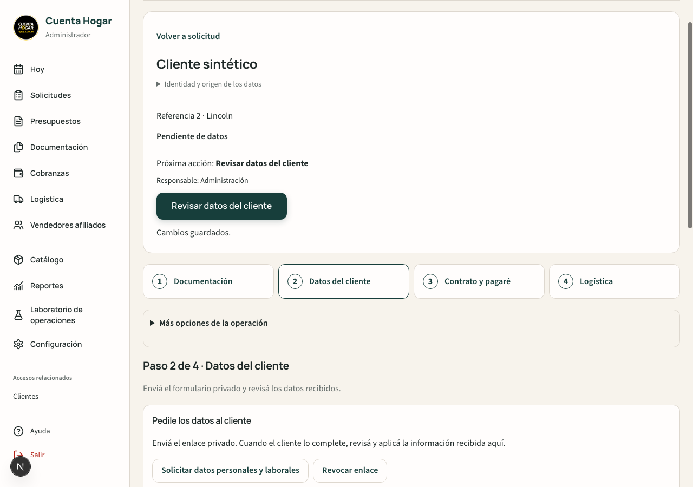
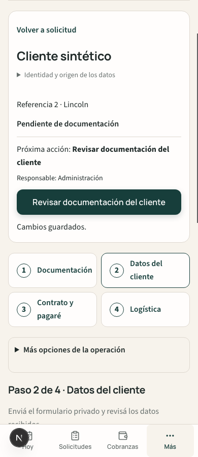

Documentación → Datos del cliente → Contrato y pagaré → Logística.
Encabezado compacto, una acción principal y acceso directo a los pendientes. Presupuesto, vendedor afiliado y cuotas permanecen en «Más opciones». Las autorizaciones de emisión y la trazabilidad se consultan en apartados secundarios.
Se reutilizan los formularios, comandos y validaciones existentes. Cambiar de paso no guarda ni aprueba la operación; los cambios locales se conservan mientras la ficha permanece abierta.
Las escrituras se ejecutaron sólo en Emulator. La respuesta del formulario del cliente se preparó mediante publicContractData, el motor existente; no se volvió a probar su formulario público completo ni se cargaron archivos nuevos, emitieron PDF o ejecutaron operaciones productivas.
El listener global de alertas de Hoy informó la denegación esperada del administrador sintético frente a las Rules existentes. No se modificaron esas Rules ni se ocultó el diagnóstico. Las APIs administrativas de la ficha funcionaron con autenticación sintética.
Sin cambios en backend, fórmulas, permisos, Rules, catálogo jurídico, numeración CH ni configuración productiva. Merge y despliegue pendientes de revisión.

